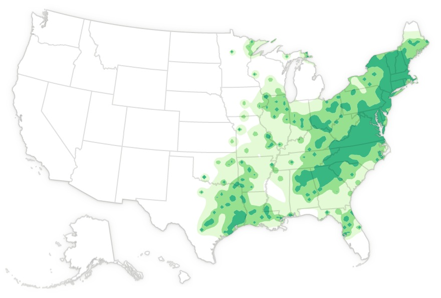

Quick Facts
- Size: 3-4.5 inches
- Weight: 300-500 milligrams
- Lifespan: About 1 week
- Conservation Status: Threatened - Endangered
- Range: Eastern North America and parts of Canada
Key Nighttime Adaptations
Luna moth's long tails attach to their hindwings and are capable of disrupting bats' echolocation, making the moths difficult for bats to catch. Every now and then, a bat might be able to bite the tail, but the moth itself will still be able to escape it.
Diet
Luna moths actually do not eat at all. They do not possess mouths or digestive organs. They live for a short time and are fueled entirely by the stored energy from their time as caterpillars.
Role in Ecosystem
As caterpillars, they eat all kinds of leaves from maple, sweet gum, and hickory trees, just to name a few, absorbing nutrients that will eventually make its way back into the environment. They do act as a food source for some nighttime predators.
Fun Fact: Males and females can be distinguished based on the antenna. Males have large bushy antennae, while the females have long, slender antennae.

Light Pollution's Effect on Luna Moths
Light pollution has greatly disrupted Luna moths' mating and reproductive abilities. The moths only live a short time as adults capable of reproduction. If that time is spent chasing artificial lights rather than mating, they miss their chance to reproduce at all. This issue has led to a major decline in the species numbers in recent years.